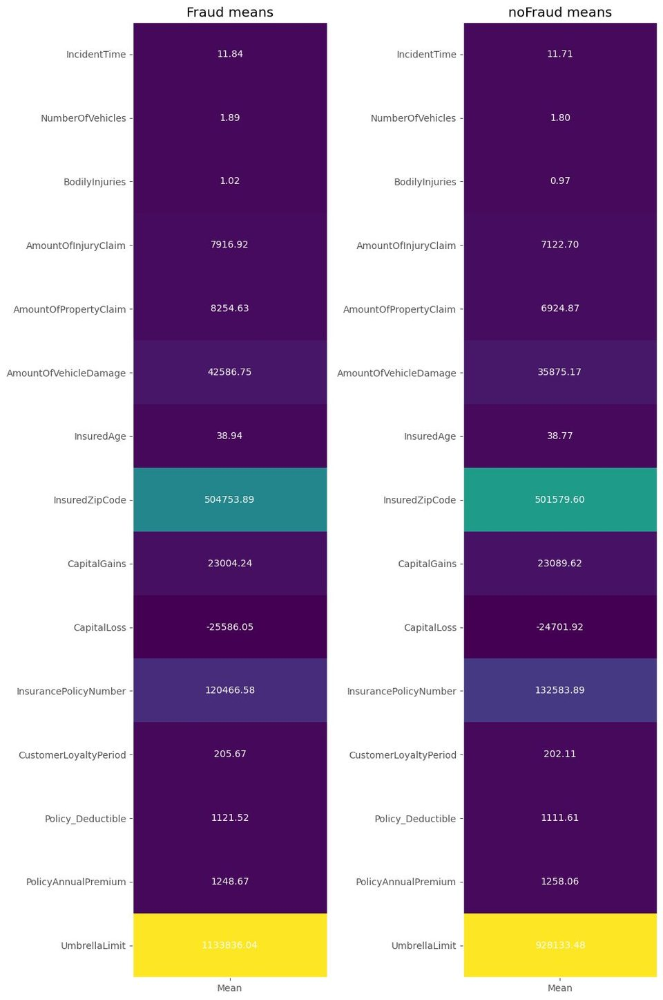
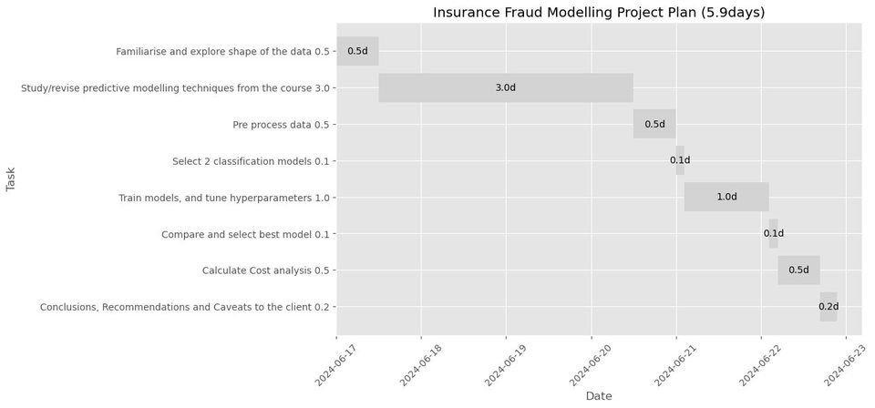
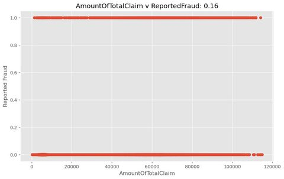
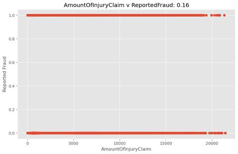
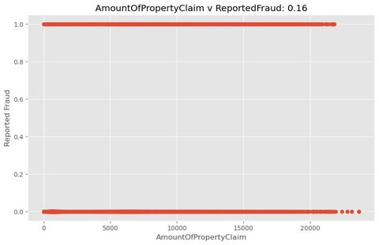

Assessment
Fraud prediction
I compared classification approaches for fraud detection, with preprocessing, train/test splits, model selection and an explicit cost analysis.
OCOM5101M / Data Science
The final assessment framed classification as a business decision: build a model to identify potentially fraudulent insurance claims, then connect model performance to operational cost, false accusations and profit.
The gap between “accuracy” and usefulness is wider than it looks. A classifier can score well in a notebook and still be a terrible business instrument when the error costs are asymmetric.

Assessment
I compared classification approaches for fraud detection, with preprocessing, train/test splits, model selection and an explicit cost analysis.
Methods
The work used scikit-learn pipelines, scaling, cross-validation, logistic/trees/ensemble-style model comparison and confusion-matrix based evaluation.
Evaluation
The case study made the business trade-off concrete: catching fraud matters, but wrongly accusing a customer also has a cost.
Lesson
The best model is the one that improves the actual decision process, not the one with the prettiest headline metric.



